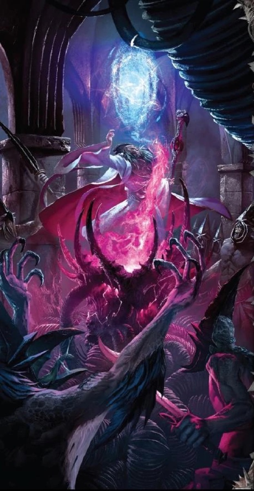
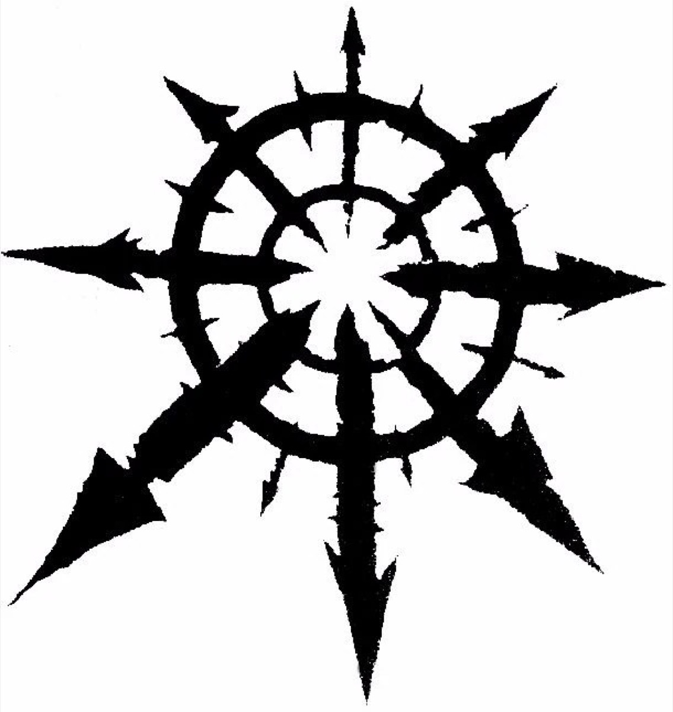

Chaos cult
| Chaos cult | |
|---|---|
| Heretical organisations of the Imperium of Mankind | |
 A cult sorcerer calls a daemon through a gate of Warp light | |
| Type | Secret or semi-secret heretical society |
| Patron | One of the Chaos Gods, or the Warp itself |
| Origin | Warp cults seeded on Compliant worlds before 005.M31; later cults from the Horus Heresy onward |
| Regions | Almost every world of the Imperium, especially hive worlds and feral worlds |
| Opponents | Inquisition, Ordo Hereticus, Adeptus Arbites, Grey Knights |
| Notable cults | Brotherhood of the Knife, Cult of the Red Talon, Cult of the Angel of Fire, The Unbound, The Lost and the Damned |
A Chaos cult is an often secret organisation that worships Chaos or one of the Chaos Gods. Imperial scholars regard cults as the most dangerous of the organisations that plot against the rule of the Imperium from within. Cults can be found on almost any Imperial world, and they recruit from every class, from hive gangers and soldiers to nobles and officials.[1]
Cults aim to survive and to take control of the society around them. Their members usually hide behind legitimate bodies such as trade unions, charities, guilds and political parties, and they gather power until they can seize a township or a whole world. Imperial records describe cults that rose in open revolt and cults that worked with a Traitor Legion's invasion, so that the rebels and the invaders struck together.[1]
The Imperium has never been able to stamp out cults entirely. The Ordo Hereticus and the Inquisition treat them as the chief enemy within, and their agents have hunted cults since the Horus Heresy. The Imperial Truth denies that the Ruinous Powers are real, and so many Imperial officials have been slow to recognise a cult until it has grown large. Cults are also suppressed as a matter of policy, and Imperial records on them are often sealed.[1][2]
History
[edit]Warp cults before the Heresy
[edit]Warp cults were known during the Great Crusade, but most were small and found only on worlds near Warp storms or with high rates of psyker birth. The Great Crusade's commanders usually ordered such worlds destroyed by Exterminatus rather than fight the cults on the ground. Many Imperial records treat this order as the Emperor's own, though later accounts show that some Legions quietly ignored it.[1]
The Word Bearers changed this. Before the Heresy, the Legion seeded hidden Warp cults on the worlds it had brought to Compliance, while outwardly those worlds seemed orderly and loyal. Imperial records call these worlds the "Holy Worlds", a name used by the cults themselves.[1][a]
Horus Heresy
[edit]The Heresy, which ran from 005.M31 to 014.M31, turned cults into an army. At the Battle of Calth in 007.M31, the Word Bearers committed cult forces for the first time in large numbers, and the cultists fought alongside the Traitor Legions in the attack on the Ultramarines. The cults were cheaper and easier to raise than regular troops, and they obeyed any order, however cruel. Imperial accounts record that the Traitor Legions relied on cultists to hold ground after the Legions had moved on.[1][3]
The rising spread after the betrayal at Isstvan III in 013.M31. Across the Imperium, workers destroyed their machines, rebels slaughtered their officers, and scholars revived old idolatries. The Imperial Truth held that these were the failures of Imperial Compliance. Later Inquisitorial reports blame both the Word Bearers and the regimes that trusted them.[1][2]
Post-Heresy suppression
[edit]After the Heresy, the High Lords of Terra and the Inquisition suppressed all knowledge of what the Warp cults believed. The cults' terms, such as the "Primordial Annihilator" and the "Eightfold Path", were classed as anathema. The Ordo Hereticus was given the task of hunting cults in the centuries that followed, and the Ordo developed the methods used against them ever since.[1][4][b]
The Hollow Cult and the Grey Knights
[edit]In 290.M34, the Grey Knights fought a long war against the Slaaneshi Hollow Cult. The cult ambushed their Brotherhoods by bending reality so that each Battle-Brother was cut off and overwhelmed. The Grey Knights lost almost the whole of the 7th Brotherhood. Their retribution was total, and the cult was recorded in a sealed chronicle that survives only in faded ink.[5]
Era Indomitus
[edit]In 855.M41 the Cult of the Red Talon rose on Antraxes, serving a daemon called M'Kachen, the Lord of Change. Brother-Captain Arvann Stern of the Grey Knights led the counterattack and drove the daemon back into the Warp. Early in the 41st millennium the Cult of the Angel of Fire took power in the Krask System. Its sect leaders believed they spoke with a messenger of the Emperor, and they overthrew the Planetary Governors. The cult was later encountered by the forces of Lord Solar Macharius during the Macharian Crusade.[1][5]
During the Gothic War (139–160.M41), the troopers of the 969th Cadian Regiment were quarantined on Certus Tertia after contracting a plague from its water. They refused to return to Cadia, turned to Nurgle, and became the Unbound, a cult that still lives in the Eye of Terror. Their former colonel styles himself the "False Castellan".[1]
The 13th Black Crusade of Abaddon the Despoiler in 999.M41 drew the largest body of cultists since the Heresy. Cultists of every kind followed the Warmaster's banner, and the term "The Lost and the Damned" came to mean all human and mutant forces of Chaos that were not Chaos Space Marines.[6]

Organisation
[edit]Recruitment
[edit]Cults form where the Imperium's rule is most harsh. Hive worlds are the most fertile ground, since their enormous populations live in poverty, and many of their underhive dwellers never learn the Imperial Truth. Feral and Death worlds, where native superstition is strong, also produce cults. On the Imperial worlds that have been Compliant for longest, cults often grow from the families of officials who keep old beliefs alive.[1]
New members are brought in by demagogues, who promise a better life or a place in a new order. Recruits are marked with sigils that are said to hurt the eyes of the faithful. Members who gain the favour of their gods are granted mutations, which may take the form of living steel muscles or a tongue of sucker-tentacles.[1]
Types of cult
[edit]Imperial scholars divide cults into several types. Blood cults sacrifice victims to the gods. Cults of change serve Tzeentch and seek forbidden knowledge. Plague cults serve Nurgle and spread disease. Pleasure cults serve Slaanesh and seek sensation. Death cults follow the dead, and mystery cults and secret societies hide their goals behind legitimate fronts. Many cults combine several of these forms.[1]
Notable cults
[edit]Brotherhood of the Knife
[edit]The Brotherhood of the Knife was the largest and most effective of the Warp cults the Word Bearers brought to Calth. It was mustered under the guise of second-line Excertus Imperialis Levy Auxilia, so that its numbers were hidden from loyal commanders.[1]
Cult of the Red Talon
[edit]The Cult of the Red Talon arose on Antraxes in 855.M41, serving the daemonic Lord of Change M'Kachen. It was destroyed by the Grey Knights under Brother-Captain Stern.[5]
Cult of the Angel of Fire
[edit]The Cult of the Angel of Fire ruled several worlds of the Krask System in the early 41st millennium. It executed those who spoke against it by burning them alive, and its theocratic regimes held the systems until Macharius's forces arrived.[1]
The Unbound
[edit]The Unbound was a cult devoted to Nurgle in the Eye of Terror. It was formed by the Cadian 969th Regiment, which turned its allegiance to the Lord of Decay after a plague from Certus Tertia.[1]
The Lost and the Damned
[edit]The Lost and the Damned is the general name for the cultists that follow Abaddon the Despoiler in the Black Crusades of Chaos Undivided. In later usage, it also means any human or mutant force of Chaos that is not a Chaos Space Marine warband.[6]
Timeline
[edit]| Date | Event |
|---|---|
| Before 005.M31 | Word Bearers seed hidden Warp cults on Compliant worlds |
| 005.M31 | The Horus Heresy begins; cults take up arms on the Traitor side |
| 007.M31 | Cultists fight in large numbers at the Battle of Calth |
| 013.M31 | Uprisings across the Imperium after the betrayal at Isstvan III |
| 014.M31 | The Horus Heresy ends; the cults go underground |
| c. 193.M31 | The Empyreal Truth is suppressed by Imperial order |
| 290.M34 | The Hollow Cult destroys most of the Grey Knights' 7th Brotherhood |
| 139–160.M41 | The Unbound are formed by the 969th Regiment during the Gothic War |
| 855.M41 | The Cult of the Red Talon is destroyed on Antraxes |
| Early M41 | The Cult of the Angel of Fire rules the Krask System |
| 999.M41 | Cultists join Abaddon's 13th Black Crusade |
See also
[edit]Notes
[edit]References
[edit]- ^ a b c d e f g h i j k l m n o p Imperial Ministorum Archive (c. 002.M41). Compendium of Heretical Cults. Adeptus Ministorum.
- ^ a b The Empyreal Truth (suppressed 193.M31). Terra.
- ^ Chronicles of the Heresy (sealed). Logos Historica Verita, Terra.
- ^ Liber Ecclesiasticus (M37). Adeptus Ministorum.
- ^ a b c Calastan, Grand Master (c. 290.M34). Sanctum Chronicles of the Brotherhoods. Citadel of Titan (sealed).
- ^ a b Records of the Indomitus Crusade (ongoing). Office of the Lord Commander.